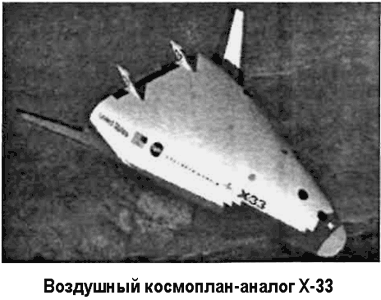
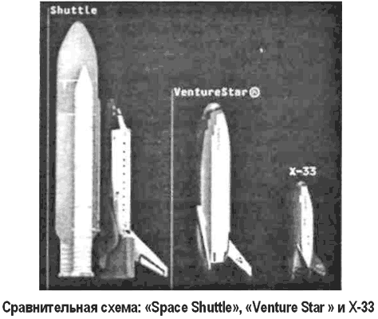

Атмосферный аналог «Х-33»
Летательный аппарат создавался в рамках программы «РЛВ» как атмосферный аналог космического корабля «Вентура Стар» и демонстратор заложенных в него технических концепций.
Конструктивно «Х-33» является уменьшенной вдвое моделью «Вентура Стар». Он в девять раз легче, а стоимость разработки в четыре раза меньше.
Габариты «Х-33»: длина — 25,3 метра, размах крыла — 28 метров, высота — 8,2 метра.
Фирма «Локхид-Мартин» получила от НАСА контракт на постройку «Х-33» в июле 1996 года. НАСА планировало потратить на этот проект 941 миллионов долларов, фирма «Локхид-Мартин» собиралась инвестировать в него еще как минимум 220 миллионов.
«Х-33» не планировалось выводить на орбиту. Он должен был провести серию полетов в атмосфере над западной территорией США для проверки работы всех систем. Было намечено 15 испытательных полетов. Стартуя вертикально с авиабазы Эдварде в Калифорнии, «Х-33» должен достигать скорости 15 Махов на высотах до 100 километров.
Строительство Центра испытательных полетов «Х-33» началось в ноябре 1997 года и было завершено в соответствии с предварительными планами через 12 месяцев, без перерасхода средств — на строительство было выделено 32 миллиона долларов.


В 1997 году началась серия испытаний линейного ЖРД в полете со скоростью от 0,8 до 3 Махов на высотах от 6 до 24 километров. На летающей лаборатории НАСА «SR-71 #844» был установлен контейнер «Linear Aerospike SR-71 Experiment» длиной 12,3 метра, который представляет собой модель «Х-33» в масштабе 1:10 с восемью секциями двигателя и измерительным оборудованием общим весом 5,8 тонны. Имеющегося топлива хватает для 2–3 секунд работы двигателя с тягой до 2800 килограммов.
Первый полет космического корабля «Х-33» запланировали на март 1999 года. Потом старт был отодвинут на июль, декабрь, а затем — на середину 2000 года. Первая отсрочка была вызвана недостаточной надежностью крепления друг с другом деталей V-образного сопла линейного ЖРД XRS-2200, которые должны выдерживать высокую температуру.
Последний раз полет был отложен из-за проблем со сборкой топливного водородного бака. В декабре 1998 года во время испытаний при высокой температуре внутренняя стенка одного из двух баков для жидкого водорода потеряла герметичность.